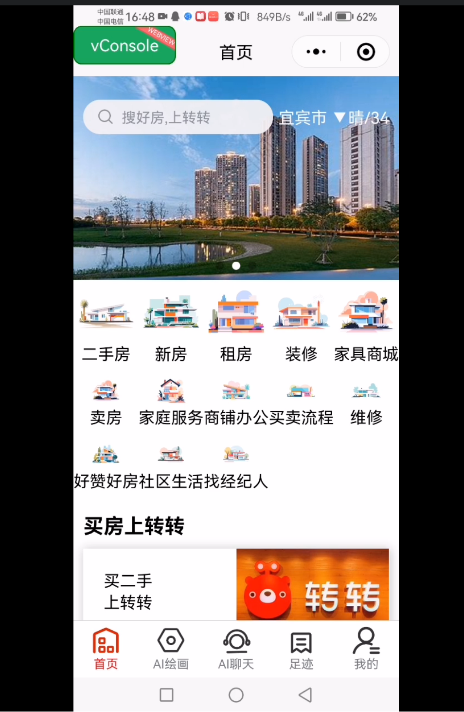
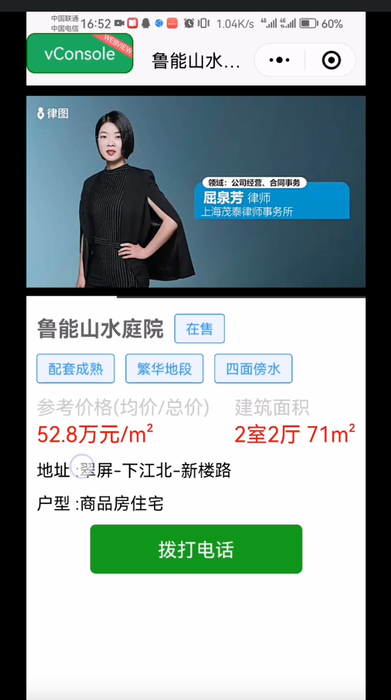
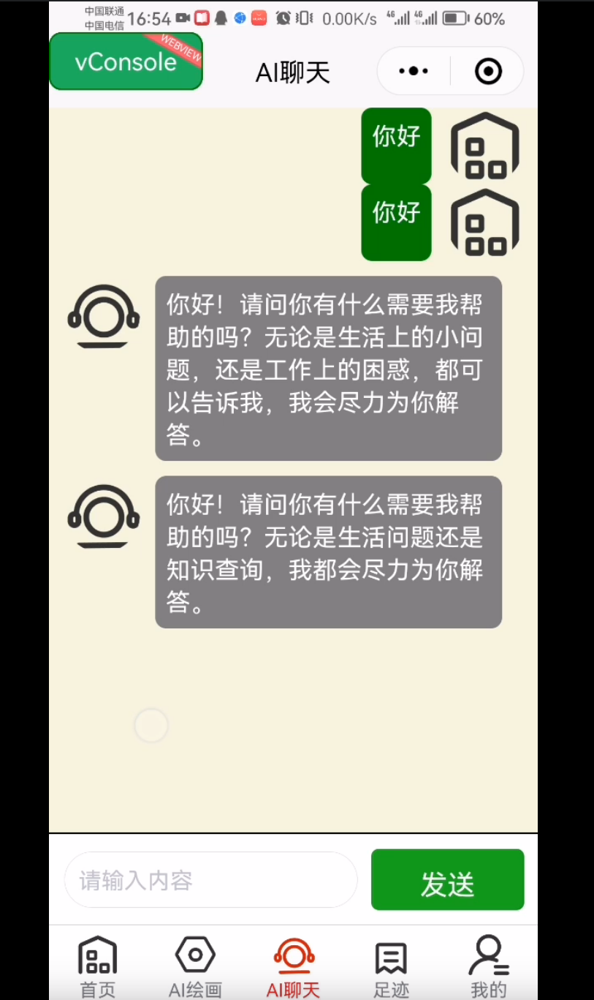

微信小程序 - 房产AI应用
×

小程序首页 - 轮播与宫格导航

热门房产列表页面

房产详情页与弹窗功能

AI对话与绘画功能
项目概述
本项目是一个综合性的微信小程序，融合了房产展示、地理位置服务、AI对话与AI绘画等多个功能模块。采用uniapp框架开发，实现了跨平台兼容性，支持微信小程序、H5等多端运行。
项目涵盖了从基础UI组件开发到复杂业务逻辑实现的全过程，包括用户交互、数据绑定、API调用、本地存储等关键技术应用，展示了完整的小程序开发流程。
主要功能模块
房产展示系统
实时定位服务
购物车功能
AI智能对话
AI绘画生成
一键拨号弹窗
核心技术实现
- UI框架与组件化：
- 使用uView UI框架构建统一美观的界面组件
- 实现响应式布局与自适应设计
- 开发轮播图、宫格导航、模态框等交互组件
- 数据与状态管理：
- 应用Vue.js数据绑定与响应式系统
- 实现购物车商品状态管理
- 使用uni.setStorageSync进行本地数据存储
- API集成与服务调用：
- 集成高德地图API实现逆地理编码定位
- 调用百度AI平台实现智能对话与绘画
- 实现异步请求与数据渲染
- 导航与路由：
- 配置tabBar底部导航系统
- 实现页面间跳转与参数传递
- 使用uni.navigateTo进行页面路由管理
技术亮点
- 跨平台开发：使用uniapp实现一次开发，多端部署
- 组件化设计：高度复用的UI组件，提升开发效率
- AI技术融合：将传统房产应用与前沿AI技术结合
- 用户体验优化：流畅的动画过渡与直观的操作流程
- 性能优化：图片懒加载、数据缓存等性能优化措施